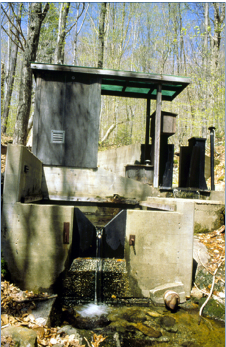
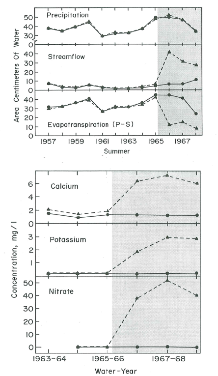
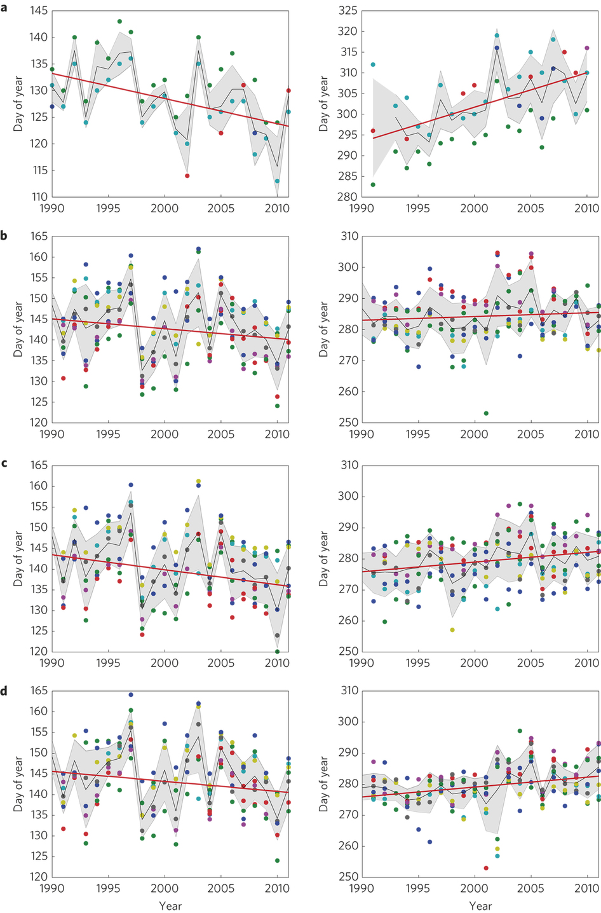
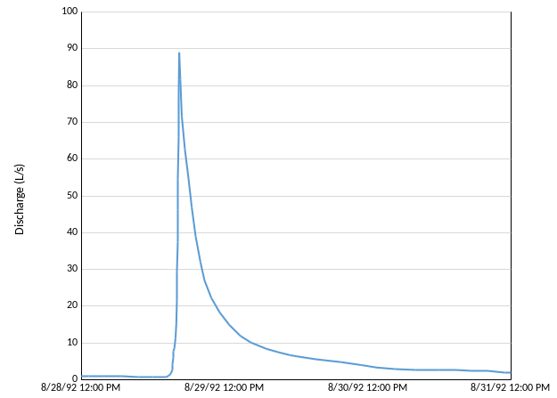
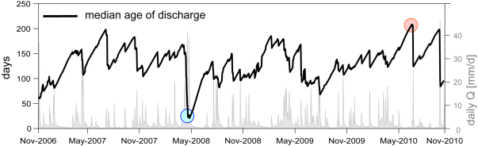

3 Hydrology
Chapter Editor: Mark Green
3.1 Background
The HBEF was established in 1955 for the purpose of studying the effects of forest management on streamflow and water quality, building upon pioneering work from other sites that established the efficacy of the paired small watershed approach (Bates & Henry., 1928). The principle underlying the small watershed approach is that for a catchment with relatively watertight bedrock (thus minimal subsurface loss), water can leave the watershed only by stream discharge or evapotranspiration (ET). Hence, indirect measurement of annual ET (which is difficult to quantify directly) is obtained as the difference between annual precipitation and stream discharge measured using v-notch weirs (Figure 3.1).

The units in the hydrologic balance of a catchment are depth units (mm H2O) analogous to the familiar units of rainfall events. The volume discharge of the stream at the base of the catchment is divided by the projected area of the catchment to obtain depth units. The watershed balance of the catchment and annual ET are calculated on a water-year basis at the HBEF, from June 1 to May 31. A water year is determined by the point in time when there is the least amount of change in the volume of water stored in the watershed (especially soils and groundwater). This is accomplished by comparing precipitation and streamflow for successive 12 month periods over many years and determining what period has the highest correlation. This analysis indicates when water storage is most stable, which at the HBEF occurs after spring snowmelt when trees are leafing out and water storage is at a minimum.
Hydrologists at the HBEF developed a long-term record of the water balance and annual ET for hydrologic reference watershed 3 (Figure 3.2). On average, about 40% of annual precipitation goes to ET and 60% to stream discharge. This partitioning to ET and streamflow varies considerably from year to year with a lower proportion to ET in wet years (in W3 minimum = 22% in WY 2010 and maximum = 53% in WY 1964). However, the absolute annual ET flux is relatively constant across years in the typically wet summer climate of HBEF where stomatal limitation of transpiration is less important than in drier climates. In an early experiment, WS2 was deforested, essentially eliminating transpiration (Likens et al., 1970). Of course, stream discharge dramatically increased as only about 9% of precipitation input was evaporated (Figure 3.3); because soil temperature and surface moisture were greatly elevated by the elimination of vegetation cover, soil and snowpack evaporation in this experiment (about 120 mm H2O/yr) was much higher than for closed canopy forest (see below).

The long-term record at the HBEF also demonstrates the response of the forest water balance to atmospheric and climate change. Three key environmental drivers have increased gradually at the HBEF since the 1950s: air temperature, annual precipitation and atmospheric CO2 concentration. In theory, increasing air temperature would be expected to cause higher evaporation (and ET) rates and, a longer leaf-on season of the deciduous trees, that should also contribute to higher ET. Indeed, phenological records from the HBEF indicate a lengthening leaf-on period [Keenan et al. (2014); Figure 3.4).

Conversely, higher atmospheric CO2 would be expected to increase stomatal control of transpiration (Eamus, 1991). Our long-term, indirect estimate of annual ET for four reference watersheds at HB (WS3, WS6, WS7 and WS8) indicate little temporal change although the pattern differed slightly between the north- (WS7 and 8) and south-facing (WS6 and 3) watersheds (Figure 3.2). Trends in ET from other small watersheds in the Northeast are also inconsistent, suggesting that local site factors override broader regional drivers of ET. The exact cause of these trends is a topic of ongoing study at the HBEF.
Most recently, water budgets in the four reference catchments indicated an approximately 30% increase in ET starting in 2010 and continuing through 2020 (Figure 3.2). We analyzed the annual water budgets, cumulative deviations of the daily P, RO and water budget residual (WBR = P − RO), potential ET (PET) and indicators of subsurface storage to gain greater insight into this shift in the water budgets (Green et al., 2021). The PET and the subsurface storage indicators suggest that this change in WBR was primarily due to increasing ET. While multiple long-term hydrological and micrometeorological data sets were used to detect and investigate this increase in ET, additional measurements of groundwater storage and soil moisture would enable better estimation of ET within the catchment water balance. Increasing the breadth of long-term measurements across small gauged catchments allows them to serve as more effective sentinels of substantial hydrologic changes like the ET increase that we observed.
3.2 Hydrologic Processes: Precipitation and Snowmelt
Early reports from the HBES indicated annual precipitation at 130 cm/yr with about 25-30% occurring as snow. Annual precipitation at the HBEF has increased by about 20% over nearly 60 yr of record, reflecting the general trend for the Northeast region (Hayhoe et al., 2008). Most of this change has been in the warm season, as winter precipitation has not changed significantly; however, because of warmer winter temperatures, snowpack depth and the number of days with snow cover have declined. As a result snowmelt-induced high spring flows have declined. Low snow years are also associated with soil freezing events because the snowpack ordinarily insulates soil from cold winter air temperatures (Campbell et al., 2010).
An array of gages around the HBEF illustrates meso-scale variation in precipitation. In general, annual precipitation increases slightly with elevation (40 mm/100 m) as does the proportion in the form of snow. Due to local orographic effects, a significant west-to-east gradient of decreasing annual precipitation also is observed independent of elevation. Together, elevation and longitude explain 75% of the variation in long-term average annual precipitation.
3.3 Hydrologic Processes: Canopy Interception and Evaporation
A considerable proportion of the precipitation falling on a forest is intercepted by the canopy, clings to the leaves and branches and never reaches the ground, eventually evaporating back to the atmosphere (I/E). Leonard (1961) conducted detailed studies of canopy I/E in the northern hardwood forest at HB. He estimated that 13% of gross precipitation (i.e., in the open) was lost as I/E during the leaf-on period. This value was only slightly lower (12%) during the leafless period, presumably because of high capture of snow in the canopy. Undoubtedly, canopy I/E is higher in the evergreen conifer zones. Moreover, studies in subalpine balsam fir forest near HB on Mt. Moosilauke indicated substantial augmentation of ambient precipitation by capture of cloud droplets (up to 46% of ambient rainfall; Lovett et al. (1982)). Although direct measurements have not been made at HB, the magnitude of this input would be expected to be much lower as the HB environment has less wind and fog.
Evaporation from soil (Es) has not been measured at HB. However, water isotope data at HB indicate that Es is minor relative to transpiration (Green et al. 2015). Estimates from other temperate deciduous forests suggest that Es is roughly 10% of total ET during the growing season (Moore et al., 1996).
3.4 Hydrologic Processes: Transpiration
Root water uptake and subsequent transpiration of water vapor from foliage is the principal pathway of water flux to the atmosphere. Transpiration flux depends upon environmental factors, especially air temperature, atmospheric humidity and soil moisture, as well as vegetation factors, particularly forest leaf area and leaf conductance (or resistance) to water vapor. Leaf area index (LAI) in the mature northern hardwood forest is relatively uniform spatially and temporally averaging about 6.5 (Battles et al., 2014). Recovery of leaf area following large-scale disturbance is surprisingly rapid as LAI of cutover sites reaches 90% of mature forest values within 6-10 yr. Thus, increases in water yield from cutover watersheds is transient; Hornbeck et al. (1997) observed that stream discharge on cut watersheds at HB increased for only a few years. Moreover, the role of species differences in stomatal conductance in determining forest transpiration was apparent; in particular, stream discharge from the young forest watershed on cutover WS4 was consistently about 5% higher than the reference watershed (Hornbeck et al., 1997). This was due to higher stomatal conductance (Federer, 1977) of the pin cherry and birch that dominated the young forest, as compared with maple and beech in the reference forest.
The role of soil moisture stress in regulating transpiration at HB is less important than for more xeric forests (Federer & Gee., 1974), and the strong trend of increasing warm season precipitation in the region further discounts this role. However, increasing air temperature could lead to higher transpiration rates as well as more midday stomatal closure owing to greater absolute humidity deficit (Monteith, 1995). At the same time, increasing atmospheric CO2 concentration would be expected to increase water-use efficiency (WUE) of plants and some evidence of increasing WUE and decreasing ET in northeastern forests has been observed (Keenan et al., 2013). Exactly how the coincident trends of increasing CO2, temperature and precipitation will affect forest transpiration in coming decades remains uncertain.
An unexpected result was observed regarding transpiration from the watershed-scale experimental restoration of soil Ca in WS1: stream discharge from the treated catchment decreased by about 20% for three years following the application of CaSiO3, indicating that transpiration had increased (Green et al., 2013). The causes of this striking response are unknown although follow-up studies indicate an increase in sapflow of mature forest trees, confirming the watershed mass-balance result. Another recent intriguing result, from a stable water isotope study on W3, indicates significant sub-canopy water recycling, as transpired water vapor apparently recondenses and is re-used by the understory vegetation (Green et al., 2015).
Most recently, evidence of an unexpected increase in evapotranspiration has been suggested based on the long-term records of precipitation and runoff for the south-facing catchments at the HBEF. As explained earlier, we estimate annual AET using the annual water budget for the gauged watersheds at the HBEF, assuming minimal deep seepage or changes in soil/sediment storage. On this basis we observed a striking 30% increase in annual AET in the hydrologic reference watershed (W3) from 2010 to 2019 (Figure 3.2; Green et al. 2021). Although the drivers of this trend remain somewhat uncertain, analysis of water budget residuals, climatic data and evidence of possible soil storage changes indicate that subtle increases in PET and decreased canopy resistance may be driving the trend. Further study of forest physiology, soil moisture and groundwater dynamics is needed to better resolve this important issue in ecosystem hydrology.
3.5 Hydrologic Processes: Infiltration and Soil Water Redistribution
Surface soils at HB are very porous because of high organic matter content and coarse textures. Hence, infiltration capacity is very high and infiltration-excess overland flow is uncommon (Pierce, 1967). Overland flow has been observed on some occasions when infiltration is impeded. Surface soil scarification and compaction by heavy equipment during logging can result in overland flow on skid roads. In winters with cold temperatures and little insulating snow cover, saturated soils can freeze, forming concrete soil frost that limits infiltration and causes overland flow during winter and early spring. Localized saturation-excess overland flow occurs in particular landscape positions where perched water tables reach the surface during wet periods, explained below.
Rapid vertical percolation of soil water prevails under most situations in the HB watersheds. Indeed, the formation of the predominant Haplorthod soil profile is predicated on such a flow regime (Gannon et al., 2014). However, the surface and subsurface topography and soil morphology in the HB watersheds is very complex. Bailey and co-workers (Bailey et al., 2014; Gannon et al., 2014) have demonstrated the utility of hydropedological units for characterizing this complexity at the small watershed scale: soil morphological characteristics and landscape position illustrate patterns of soil water redistribution. Observations on WS3 indicate a dynamic and spatially disconnected patchwork of water table development that depends on hillslope position, subsurface as well as surface topography and low porosity layers of dense glacial till and fragipans. These features can result in lateral subsurface flow as well as saturation-excess overland flow as detailed below.
3.6 Watershed Hydrology: Stream Hydrograph, Stormflow and Contributing Area
The flowpaths of water through soils to streams influence biogeochemical fluxes as well as temporal and spatial variation in stream discharge, all of which are key characteristics of stream habitats. An enduring challenge in watershed hydrology is understanding the processes supplying “baseflow” (i.e. streamflow following an extended interval without rain) and those generating “stormflow” and flood events.
The storm hydrograph is typically characterized by a steep rising limb following the beginning of a large rain (or snowmelt) event, a transient peak flow that can define flood effects and a prolonged receding limb following cessation of precipitation. The stream hydrograph in the HB experimental watersheds has been characterized as “flashy,” a term hydrologists use to denote a very rapid response to precipitation, a sharp peak and a quick return to baseflow (Figure 3.5). This behavior reflects the relatively short distances that water must travel in the watershed to reach the stream channel. Hooper & Shoemaker. (1986) demonstrated that most stormflow discharge at HB was supplied by “old” water that resided as storage in the watershed for some time, but exactly where does this water come from?

In general, saturated areas in a catchment are capable of generating lateral flow to stream channels, and potentially supplying storm flow; such areas are denoted “active.” However, not all active areas actually contribute to the steeply-rising limb of a stormflow event. For example, if a patch of perched water table is separated by zones of low conductivity (drier soils) from other saturated zones, rapid flow from that patch will not occur. “Contributing” areas are saturated or near-saturated soils that are hydraulically connected to the stream and hence will contribute rapidly to stream discharge during rain events. The larger the contributing area in a watershed at a particular time, the greater and more rapid the streamflow response to a rain or melt event. Certainly riparian zones are most likely to be contributing areas both because of more frequent wet conditions and because of greater hydraulic connectivity to stream-channels. However, upland areas of a watershed can also be contributing areas. Gannon et al. (2014) observed differences in perched water table development among hydropedological units and different threshold responses in the storage-discharge relationships of these units, indicative of distinct subsurface flow regimes. Moreover, variably connected and disconnected active areas occur across WS3 at HB so that the contributing area for stormflow varies in complex ways with catchment storage.
The water flow dynamics of a watershed can be further abstracted to represent the age-distribution of stored water, or analogously the travel-time distribution of water reaching the stream channel. These features of catchment hydrology are important for understanding the biogeochemical behavior of the watershed-ecosystem because they integrate spatial heterogeneity and capture kinetic and equilibrium limitations on solute dynamics. Benettin et al. (2015) estimated the median travel time for water in WS3 to range from 50 to 200 days, depending upon catchment wetness (Figure 3.6). Notably, the analysis indicated a significant role of sub-soil glacial till below the tree rooting zone in supplying water (and solutes) to the stream in WS3.

3.7 Questions for Further Study
- What explains the long-term trends in AET in the gaged watersheds and will these trends continue?
- How does the pattern of hydropedology developed for WS3 apply to the broader HB Valley and the White Mountain region?
- What caused the transient increase in AET on WS1 following restoration of soil calcium and does this response have broader implications for forest hydrology in a changing environment?
- What are the sources of baseflow in first and second-order streams in upland catchments?
- Have there been systematic and significant changes in catchment-scale storage of water in the sediments of HB watersheds?
3.8 Access Data
- USDA Forest Service, Northern Research Station. 2020. Hubbard Brook Experimental Forest: Daily Streamflow by Watershed, 1956 - present ver 11. Environmental Data Initiative. https://doi.org/10.6073/pasta/d10220595119b502fe2ac14833fa4b9b
- USDA Forest Service, Northern Research Station. 2021. Hubbard Brook Experimental Forest: Total Daily Precipitation by Watershed, 1956 - present ver 14. Environmental Data Initiative. https://doi.org/10.6073/pasta/dc5880a6956f0cdd706d1c13b13e23c3
- USDA Forest Service, Northern Research Station. 2021. Hubbard Brook Experimental Forest: Routine Seasonal Phenology Measurements, 1989 - present ver 12. Environmental Data Initiative. https://doi.org/10.6073/pasta/f2c18a955c24eadaec1fa0d915a7b527
- Hubbard Brook Watershed Ecosystem Record (HBWatER). 2021. Continuous precipitation and stream chemistry data, Hubbard Brook Ecosystem Study, 1963 u2013 present. ver 6. Environmental Data Initiative. https://doi.org/10.6073/pasta/ee9815b41b79c134fd714736ce98676a